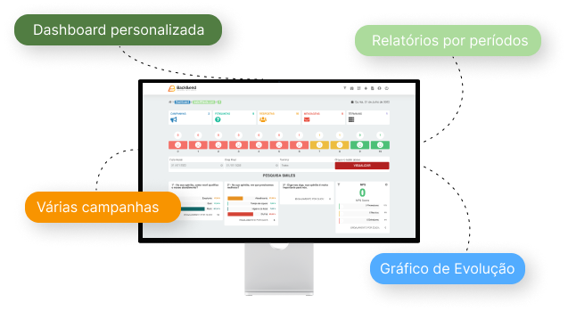

1. O que são totens de pesquisa de satisfação?
Totens de pesquisa de satisfação são dispositivos físicos ou quiosques que permitem que os clientes forneçam feedback sobre sua experiência com um produto ou serviço de maneira rápida e conveniente.
Tecnologia inovadora de totens de pesquisa de satisfação pode ajudar sua empresa a compreender melhor seus clientes e aprimorar a experiência do cliente
Descubra como nossa tecnologia inovadora de totens de pesquisa de satisfação pode ajudar sua empresa a compreender melhor seus clientes e aprimorar a experiência do cliente. Nosso aplicativo e sistema online simplificam o processo, fornecendo dados valiosos em tempo real.
Nosso sistema online de análise de dados transforma as respostas dos clientes em informações valiosas para a sua empresa ou o seu negócio. Crie gráficos e relatórios personalizados para compreender tendências, medir o CSAT e tomar decisões informadas para melhorar sua empresa.
Nosso aplicativo de pesquisa é uma ferramenta poderosa que permite que seus clientes compartilhem suas opiniões de maneira conveniente e rápida. Com uma interface amigável, você pode personalizar facilmente suas perguntas e receber feedback instantâneo.
Tópicos com informações importantes para você ter sucesso na sua pesquisa de satisfação
Totens de pesquisa de satisfação são dispositivos físicos ou quiosques que permitem que os clientes forneçam feedback sobre sua experiência com um produto ou serviço de maneira rápida e conveniente.
Nossos totens são equipados com telas sensíveis ao toque que exibem perguntas personalizadas de pesquisa. Os clientes podem selecionar suas respostas diretamente no dispositivo, e as respostas são registradas em nosso sistema online para análise.
Totens de pesquisa de satisfação ajudam a coletar feedback valioso dos clientes, o que permite melhorar a qualidade dos produtos e serviços, aumentar a satisfação do cliente e tomar decisões baseadas em dados.
Sim, você pode personalizar as perguntas da pesquisa de acordo com as necessidades específicas da sua empresa. Nosso aplicativo de pesquisa torna isso fácil de fazer.
Você pode acessar os dados coletados através do nosso sistema online de análise de dados. Lá, você poderá criar gráficos e relatórios personalizados para compreender melhor as respostas dos clientes.
Tópicos com informações importantes para você ter sucesso na sua pesquisa de satisfação
A satisfação do cliente é uma parte fundamental de qualquer negócio bem-sucedido. Para entender e melhorar essa satisfação, muitas empresas recorrem ao Net Promoter Score (NPS).
CONTINUE LENDOMedir a satisfação do cliente é crucial, mas você precisa das métricas certas para obter informações valiosas. Aqui estão cinco métricas de pesquisa de satisfação que todas as empresas devem acompanha.
CONTINUE LENDOA lealdade do cliente é essencial para o sucesso de qualquer negócio, pois clientes satisfeitos tendem a voltar e a recomendar sua empresa a outras pessoas.
CONTINUE LENDO